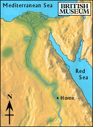

Fertile Land

After days of walking, the boy could see the river in the distance. He was tired from walking.
The boy lay down on the rocky land and fell fast asleep. When he awoke, he collected his things and began walking towards the river.
When he reached the river, he sat down on the river bank and put his feet in the water. The water sparkled in the sunlight. A boat passed by, and the boy decided that it was finally time to go home.